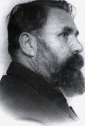

გალაკტიონ ტაბიძე (1892-1959) იყო ცნობილი ქართველი პოეტი, რომელიც XX საუკუნის ერთ-ერთი უდიდესი და ყველაზე გავლენიანი ავტორია.
თბილისთან ახლოს მდებარე მონასტერი, რომელიც მნიშვნელოვანი ადგილი იყო წმინდა გიორგის თაყვანისცემაში. აქ მდებარეობს მრავალი კულტურული ძეგლი.
Go to Top